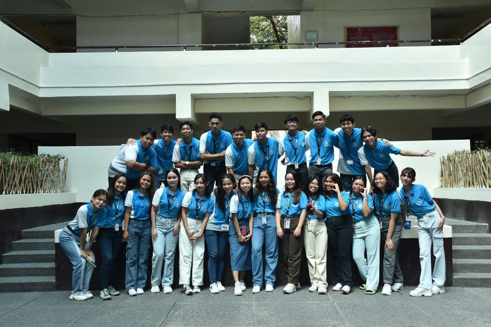

My Works
Studying
Studying is the cornerstone of personal growth and development.
It's not just about acquiring knowledge; it's a journey of
discovery and understanding. Each new subject I delve into
opens up a world of possibilities and fuels my curiosity.
It's through studying that I gain the tools and insights to
pursue my dreams and make a meaningful impact on the world.

Dreaming
Dreaming is where it all begins. It's the spark that ignites
the fire of ambition and creativity. Whether it's dreaming
of achieving a personal goal, making a difference in the
community, or bringing a vision to life, dreams have the
power to shape our destinies. They are the blueprints of our
aspirations, and they keep us motivated and focused on the
path to success.
BS Org
Being a part of the CS Organization and other organization
is more than just membership; it's a commitment to making
a positive change. It's about working collaboratively with
like-minded individuals to address issues, drive
initiatives, and create a better future. The organization
provides a platform for me to contribute my skills and
expertise to meaningful projects, fostering personal
and collective growth.

Writing
Writing is my creative outlet and a means of self-expression.
It allows me to convey thoughts, emotions, and ideas with
precision and impact. Whether I'm crafting a compelling
story, sharing valuable insights, or communicating complex
information, writing is a powerful tool that connects me
with readers and helps me leave a lasting imprint on
the world.
Gaming
Gaming is more than just entertainment; it's an art form and
a social experience. It's a world of immersive storytelling,
strategic challenges, and endless adventures. Whether I'm
playing solo or collaborating with friends, gaming provides
a unique space for fun, competition, and personal growth.
It's a hobby that brings people together and fosters
creativity and camaraderie.